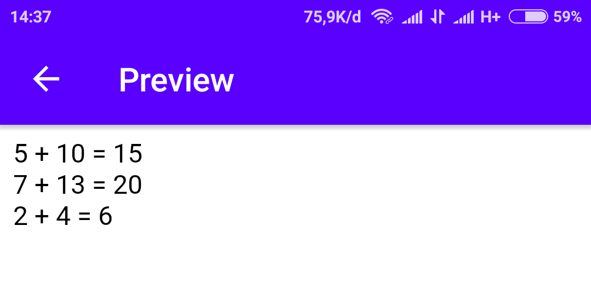

Fungsi merupakan sebuah blok kode yang dibuat untuk menyederhanakan pengkodean
Contoh:
<?php
function tulisPesan(){
echo "Hello World! Saya sedang belajar PHP";
}
tulisPesan();
?>
Hasilnya:
Fungsi Dengan Argumen
Membuat fungsi dengan tambahan argumen.
Contoh:
<?php
function tulisPesan($nama){
echo "Hello $nama! Saya sedang belajar PHP. <br>";
}
tulisPesan("Ani");
tulisPesan("Budi");
tulisPesan("Cici");
tulisPesan("Doni");
tulisPesan("Eko");
?>
Hasilnya:
Return (Pengembalian Nilai)
Fungsi ini dibuat untuk memproses suatu nilai dan mengembalikan hasilnya.
Contoh:
<?php
function hitung($x, $y) {
$z = $x + $y;
return $z;
}
echo "5 + 10 = " . hitung(5, 10) . "<br>";
echo "7 + 13 = " . hitung(7, 13) . "<br>";
echo "2 + 4 = " . hitung(2, 4);
?>
Hasilnya:
